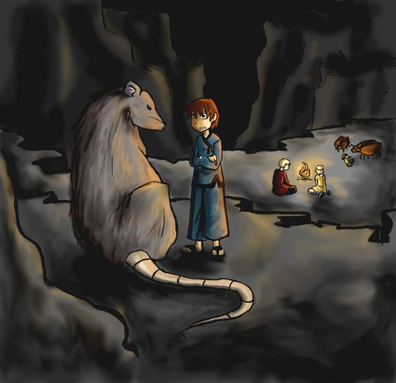
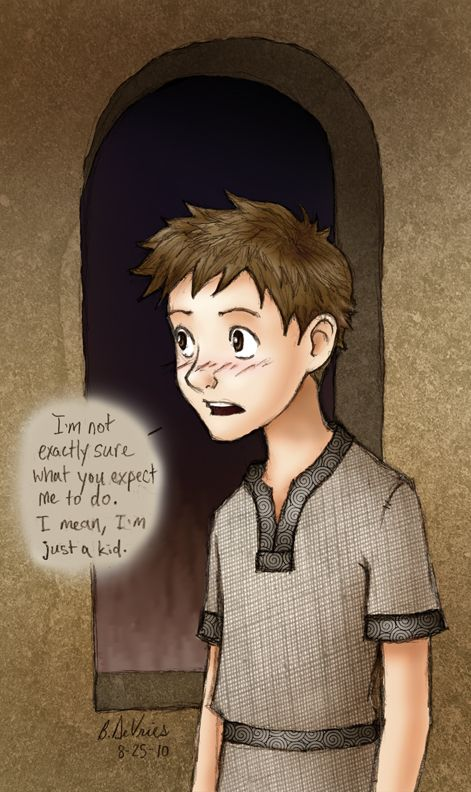

Youth review: ‘Gregor the Overlander’ by Suzanne Collins
By Clark Willis | 20th of January, 2021
There are few things as good as reading a good book, and “Gregor the Overlander” definitely qualifies. It is exciting and suspenseful, with lots of twists and turns that make you wonder what happens next. If you are like me and have really enjoyed reading book series like Harry Potter, Percy Jackson, and others, you will appreciate that this book is the first in a series called The Underland Chronicles (by Suzanne Collins, author of the Hunger Games trilogy).
“Gregor the Overlander” begins when Gregor tries to catch his youngest sister, Boots, as she starts to fall through a grate in the laundry room, but instead he falls in with her. When they land, they meet a huge cockroach, who speaks to them. Though Gregor is not very kind to the cockroach, Boots is nice to him and because of this, the roach takes them to a city called Regalia. He learns that they have come to a place called the Underland. Though Gregor really wants to return to his home before his mom starts to worry (as she did when his dad mysteriously disappeared “two years, seven months, and thirteen days” ago), the people in Regalia tell him he will be dead before he even reaches the pathway back.
At this point, Gregor is not sure what to think of the Regalians (aka the Underlanders), who are on the brink of war with their mortal enemies, the rats. Gregor does not know whether the Underlanders are good or bad. Though he is starting to realize that he may not be able to go home for a long time, he still maintains the idea that he can get back quickly. He stubbornly refuses to accept what the Underlanders tell him. I identify with Gregor in this way because, like him, I sometimes refuse to give up on my goals, thoughts, and ideas. However, on his second day in the Underland, Gregor is thrown farther into chaos when one of the Underlanders, whose name is Vikus, shows Gregor a prophecy the Underlanders are trying to comprehend--a prophecy that seems to include him and his family, though he hopes it doesn’t.

I identify with Gregor in this way because, like him, I sometimes refuse to give up on my goals, thoughts, and ideas.
A series of exciting events, starting with the prophecy, pushes Gregor into going on a quest to rescue his dad, who, as Gregor discovered, has also fallen into the laundry grate and been taken prisoner by the rats. Gregor, accompanied by a peculiar group of people and animals, departs Regalia and ventures to the land of the rats. The questers are joined partway through their journey by a friendly rat named Ripred. For the perilous quest to be successful, the questers have to undergo many challenges, work as a team, and make significant sacrifices on the journey.
One of Gregor’s quest-mates is Henry, a member of the royal family of Regalia whose parents were killed by rats. An interaction between Henry and Gregor shows how the author of this book manages to mix humor with suspense and adventure, while providing details that help the reader get to know the characters and imagine how Underland technology is different from Overland. As they travel through the Underland, Gregor is wearing a hard hat with a light. “‘You will begin a new fashion,’ said Henry cheerfully. He grabbed one of the small stone torches off the wall and laid it on top of his head. Flames seemed to be shooting out of his forehead.” Henry’s merry mood in this scene is puzzling, given the circumstances of the quest and the fact that when his parents died, Henry became “hard as stone.” Similar to many characters in the story, Henry is multidimensional.
In addition to enjoying the suspense and adventures, there is a life lesson you can learn in this book: be kind to people, regardless of appearance or affiliation. If you do enjoy this book, be sure to look at the other four books in the series as well. Gregor’s story has just begun!
